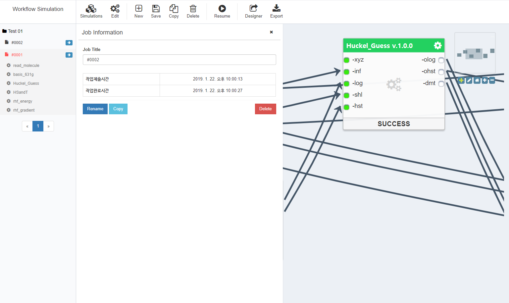
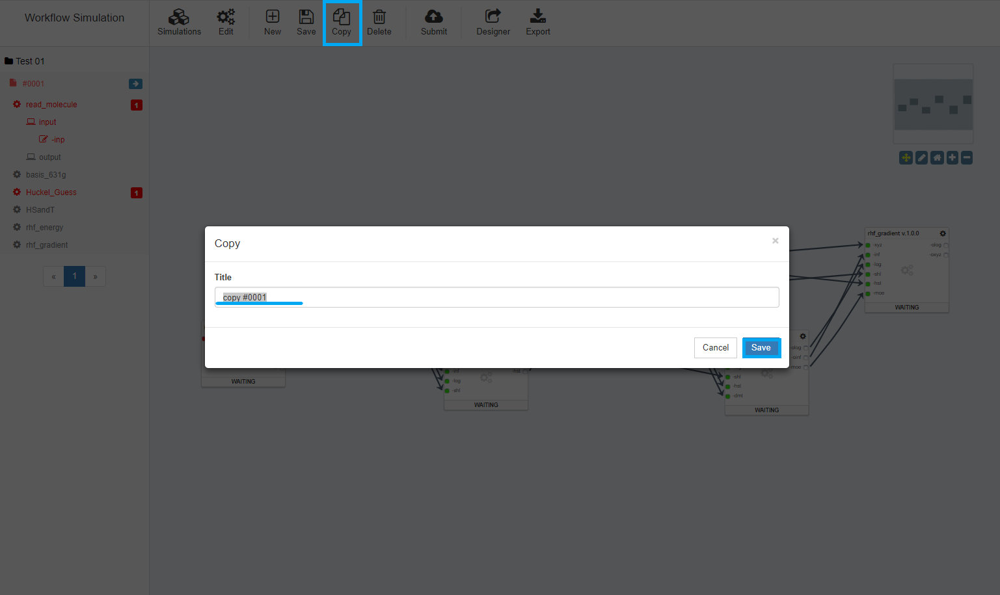
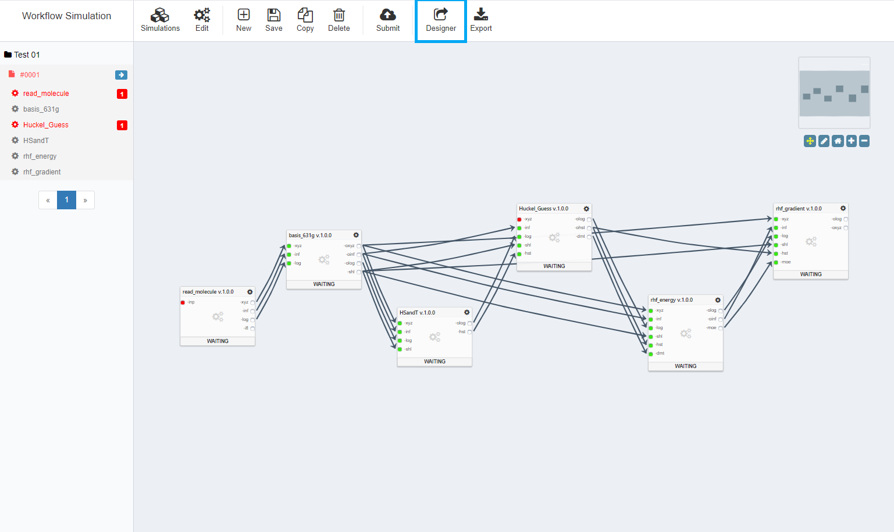

워크플로우 실행 사용자 매뉴얼
워크플로우 실행
워크플로우 실행 메뉴로 이동
- 워크플로우 편집기에서 편집된 워크플로우의 실행 화면으로 바로 이동할 수 있습니다.

- 사이언스 앱스토어에서
사이언스 앱으로 등록된 워크플로우를 선택하여 실행할 수 있습니다.(Run버튼 클릭)

Simulation 생성
- 워크플로우를 실행하기 위해서는
사이언스 앱과 마찬가지로Simulation을 먼저 생성해야 합니다. Simulation의 제목을 입력하면, 실행을 위한Simulation Job하나가 자동 생성됩니다.- 하나의
Simulation은n개의Simulation Job을 포함할 수 있습니다.

Simulation 관리
Simulation은 워크플로우 실행의 기본 단위이며Simulations메뉴에서New/Open/Rename/Delete버튼을 통해 각각 생성/불러오기/이름변경/삭제할 수 있습니다.Simulations팝업 상단의 검색 기능을 이용하여 편리하게 찾고자 하는Simulation을 검색할 수 있습니다.
Simulation Job 생성
- 워크플로우
Simulation은Simulations Job단위로 실행되며, 실행 상태를 관리할 수 있습니다. - 생성된
Simulation Job의사이언스 앱별Input Port와Output Port는 화면 좌측에 목록 형태로 출력됩니다. - 또한, 우측 캔버스에서 워크플로우 흐름도 형태로 출력됩니다.

- 좌측 목록에서
사이언스 앱의Input Port와Output Port로 마우스 오버할 때 선택된 포트로 이동하여 하일라이팅된 상태로 출력됩니다. - 좌측 목록 또는 우측 캔버스에서
Input Port또는Output Port를 클릭할 경우 워크플로우의 실행 상태에 따라 해당 포트의Editor또는Analyzer가 팝업 됩니다.
Simulation Job 실행
- 좌측 목록 또는 우측 캔버스에서
Input Port를 클릭하여 해당 포트의Editor팝업을 호출한 후 데이터를 입력합니다.
- 데이터를 모두 입력하였다면 상단의
Submit버튼을 클릭하여Simulation Job을 제출 및 실행합니다. - 필요한
Input Port를 모두 입력하지 않았다면, 경고 메시지와 함께 해당 포트는 붉은 색으로 표시되며Simulation Job은 제출되지 않습니다.
- 성공적으로
Submit하였다면 우측 캔버스에서 워크플로우의 실행 과정을 살펴볼 수 있습니다.
Simulation Job 실행결과 확인
- 좌측 목록 또는 우측 캔버스에서
Output Port를 클릭하여 해당 포트의Analyzer팝업을 호출한 후 실행 결과를 확인 또는 다운로드할 수 있습니다. - 워크플로우를 실행하는 중에도 각 사이언스 앱의 상태가
Success가 된다면 실행 결과를 확인할 수 있습니다.
- 좌측 목록의
Simulation Job제목 우측에 위치하는->아이콘을 클릭하면 상세 실행내역을 조회할 수 있습니다.
Simulation Job 재실행
Simulation Job실행이 완전히 종료된 후에 입력값을 수정하여Simulation Job을 재실행(Rerun)할 수 있습니다.
Simulation Job재실행 시Success상태인 사이언스 앱에 한해서 재실행하지 않고Reuse기능을 이용해 이전Simulation Job실행 결과를 유지할 수 있습니다.Simulation Job재실행 시Success상태인 사이언스 앱을우클릭하여ReUse메뉴를 선택한 후Simulation Job을 재실행하면, 해당 사이언스앱은 바로Success상태로 전환되며 이후 작업이 진행됩니다.

Simulation Job Pause / Resume
Simulation Job은 실행 도중 일시 정지할 수 있으며, 전체Simulation Job또는 단일사이언스 앱단위로Pause할 수 있습니다.- 이미
Running중인사이언스 앱은Pause할 수 없으며,Simulation Job을Pause한 경우Running상태인 사이언스 앱을 제외한 나머지가 일시정지 됩니다.
- 또한
Simulation Job또는 단일사이언스 앱단위로Resume하여 실행을 이어갈 수 있습니다.
Simulation Job Copy
Simulation Job의 입력값을 유지한 채 실행결과를 초기화한 상태로Simulation Job을Copy할 수 있습니다. Simulation Job의Copy는Simulation Job실행이 종료되지 않은 상태에서도 가능합니다.
워크플로우 재편집
- 워크플로우는 워크플로우 편집기 에서 재편집할 수 있습니다.
- 재편집된 워크플로우는 새롭게 생성된
Simulation Job부터 적용되며 이전Simulation Job은 편집 전의 워크플로우로 유지 실행 됩니다.
워크플로우 Export
- 워크플로우는 워크플로우 엔진에서 바로 실행할 수 있는 형태의
json파일로Export할 수 있습니다.